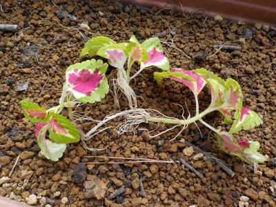
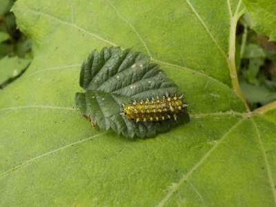
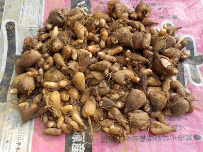
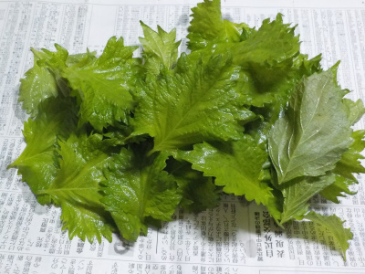

遊びで植物を育てよう
2020/07/26
コリウスの水挿しに根っこが出ました。

水につけっぱなしで気づいた時には根っこが沢山出ていました。
コリウスは簡単に増やせていいですね。
7月末に植えたら枯れるまでにどれだけ大きく育つかな？
【7月TOP】
【日記TOP】
【園芸TOP】
2020/07/26
毛虫の針に当たってしまった。

注意が足りなくて毛虫に手が当ってしまった。
手袋をしていましたが痛かったです。
腫れがひどくならないといいな。
【7月TOP】
【日記TOP】
【園芸TOP】
2020/07/18
どこかでセミが鳴いていました。

セミの声は聴くんですが、姿は見ていません。
殻だけ見ることが出来ました。
今年はコロナでつまらない夏になりそう。
【7月TOP】
【日記TOP】
【園芸TOP】
2020/07/18
フリージアの球根を掘り起こしました。

去年より倍増しました。
プランターで育てたら株が大きくそだったので、球根が増えたんでしょう。
でも沢山あっても植える場所がないです。
今年からは良く育つプランターはやめて、地植えと小さな鉢植えにしようと思います。
【7月TOP】
【日記TOP】
【園芸TOP】
2020/07/12
大葉を摘みました。

大葉が虫に沢山食べられていました。
虫に食べられるんなら、自分もドンドン食べてしまおうと思い摘みました。
今日はキュウリの浅漬けに使おうと思っています。
【7月TOP】
【日記TOP】
【園芸TOP】
過去の日記
【2024年7月の日記】
【2023年7月の日記】
【2022年7月の日記】
【2021年7月の日記】
【2020年7月の日記】
【2019年7月の日記】
【2018年7月の日記】
【2017年7月の日記】
【2016年7月の日記】
【2015年7月の日記】
【2014年7月の日記】
【2013年7月の日記】
【2012年7月の日記】
【7月TOP】
【日記TOP】
【園芸TOP】
熱中症に注意しましょう。
【おいしいものを食べよう。】【しっかり寝よう。】
【ソロ活をしよう!】【季節感のあることをしよう。】【動画視聴はほどほどに。】【当サイトの全てのコンテンツは無断転載禁止です。】